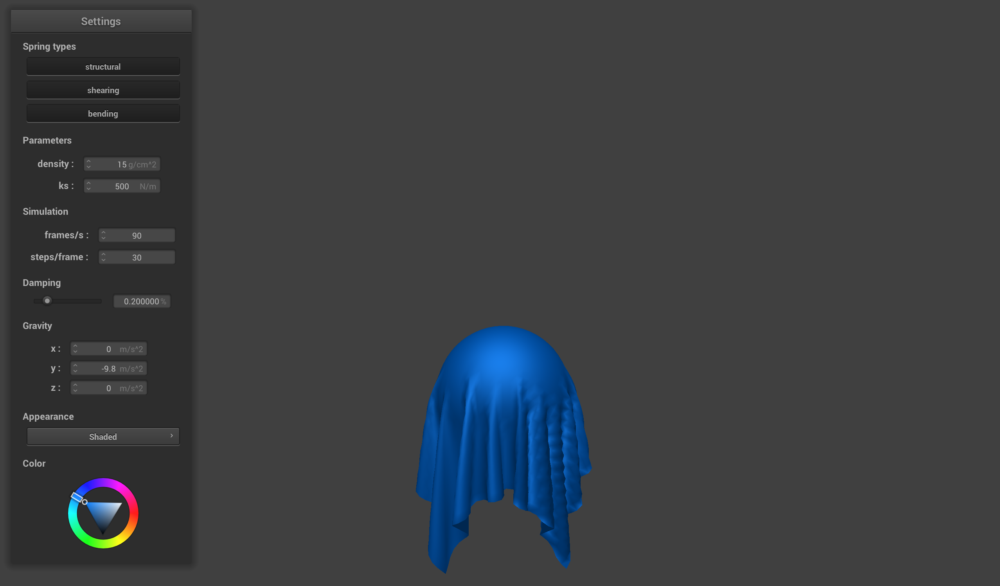
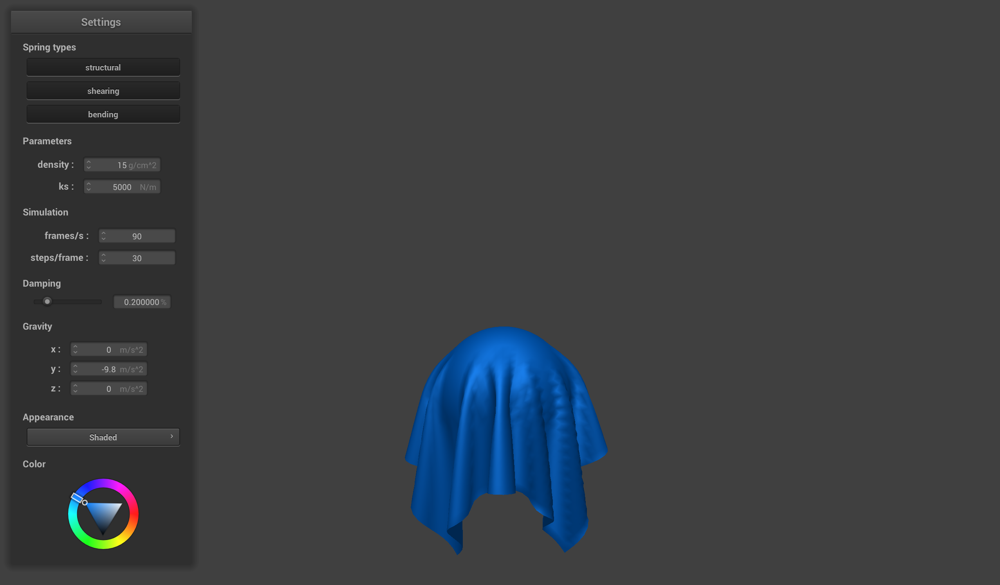
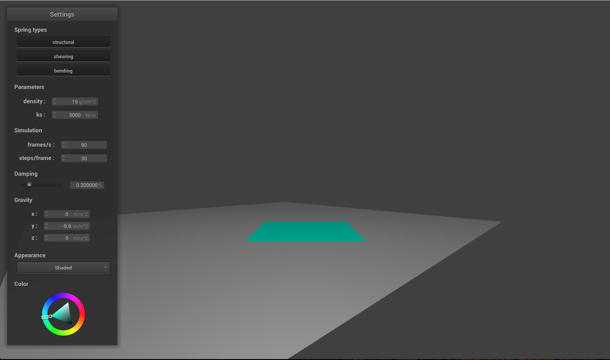
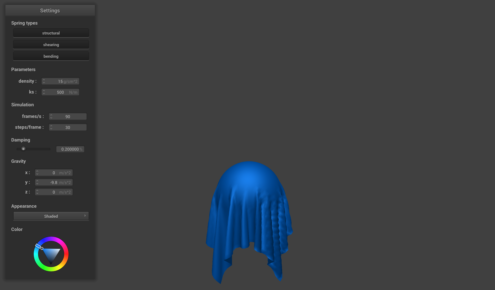
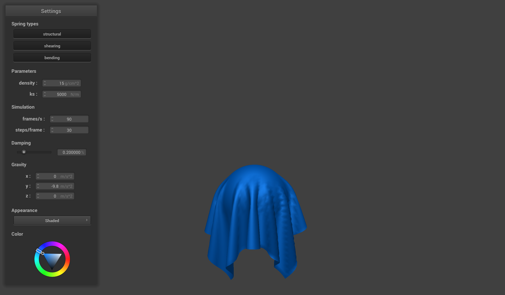

Part 3
Handling Collisions with Other Objects
Results!
ks=500
ks=5000

ks=50000
Plane
ks=500
ks=5000
Observations
As we saw in our previous part, we can see that a lower spring constant (ks) will cause the cloth to be more flexible. We know this occurs, because a lower spring constant means there is less tension between the point masses; therefore, less tension will cause more flexible cloth. This is why the cloth with spring constant 500 has a lot of folds and is droopier than the other pieces of cloth. Conversely, the cloth with spring constant 50000 has much fewer folds and even seems to be holding itself up to a certain extent on the sides.
- © Untitled
- Design: HTML5 UP
As we saw in our previous part, we can see that a lower spring constant (ks) will cause the cloth to be more flexible. We know this occurs, because a lower spring constant means there is less tension between the point masses; therefore, less tension will cause more flexible cloth. This is why the cloth with spring constant 500 has a lot of folds and is droopier than the other pieces of cloth. Conversely, the cloth with spring constant 50000 has much fewer folds and even seems to be holding itself up to a certain extent on the sides.
- © Untitled
- Design: HTML5 UP